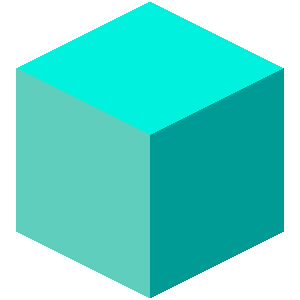
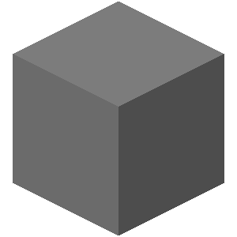

The Critterz Minecraft server
A survival mode, co-op, PvP enabled server on a 16,000 by 16,000 block map. Built upon the Ethereum blockchain.
Generate BLOCKs by playing on the server
BLOCKs are ERC-20 tokens generated based on your in-game activity. BLOCKs are used to claim Plots (64 by 64) on the Critterz Minecraft server. There are 62,500 total Plots available. BLOCK tokens are only used to enhance the gameplay experience.

Exclusive only to Critterz NFT holders
The map is only accessible by Critterz NFT holders. To join, you will need to stake your Critterz NFT. Plot owners can also access the map, however, only Critterz NFT holders can generate BLOCK tokens.

Own or sell Plots of land
You can use BLOCK tokens to claim Plots (64 by 64) on the server (62,496 available). Plots are also NFTs and can be traded between players. Plot metadata and ownership are stored fully on-chain as well.

Don't play Minecraft? Generate BLOCKs anyway
Critterz NFT holders can provide tokens to other Minecraft players (such as a child, a relative, or a friend) to receive a share of the BLOCKs generated by their in-game activity.